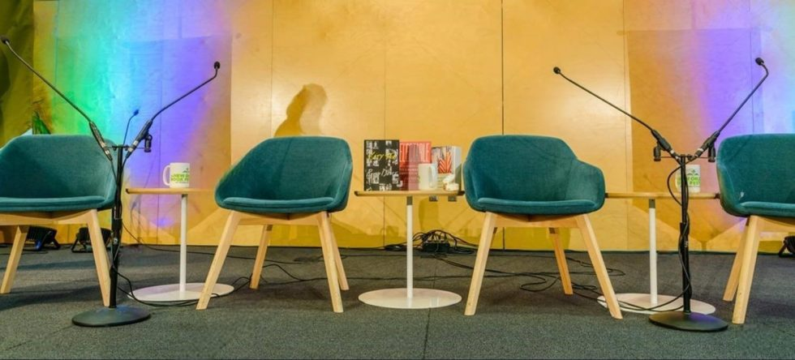

01Παρουσιάσεις βιβλίων
Καλύπτουμε παρουσιάσεις με livestream, video και ηχογράφηση ομιλίας, ώστε το περιεχόμενο να φτάνει και σε όσους δεν μπορούν να παρευρεθούν.
Υποστηρίζουμε παρουσιάσεις βιβλίων, συνέδρια, σεμινάρια και webinars με τεχνική οργάνωση, ζωντανή μετάδοση και υλικό που συνεχίζει να δουλεύει μετά την εκδήλωση.
Ζητήστε συζήτηση ↗
Οι ανάγκες, η ομάδα και τα παραδοτέα διαμορφώνονται ανάλογα με το project.

01Καλύπτουμε παρουσιάσεις με livestream, video και ηχογράφηση ομιλίας, ώστε το περιεχόμενο να φτάνει και σε όσους δεν μπορούν να παρευρεθούν.
02Οργανώνουμε την τεχνική υποστήριξη και τη ροή της εκδήλωσης, με δυνατότητα παράδοσης μονταρισμένου υλικού για προωθητική χρήση.
Σχεδιάζουμε και υποστηρίζουμε online διοργανώσεις, καθοδηγώντας ομιλητές και συμμετέχοντες και παρέχοντας τεχνική υποστήριξη σε όλη τη διάρκειά τους.
Για vidcasts, live studio sessions και γυρίσματα με σκηνικά, σχεδιάζουμε τις απαιτήσεις χώρου και τεχνικού εξοπλισμού γύρω από την παραγωγή. Η διαθεσιμότητα και οι προδιαγραφές επιβεβαιώνονται πριν τον προγραμματισμό.
Μοιραστείτε μαζί μας το project και τις ανάγκες σας. Θα επανέλθουμε με τα κατάλληλα επόμενα βήματα.